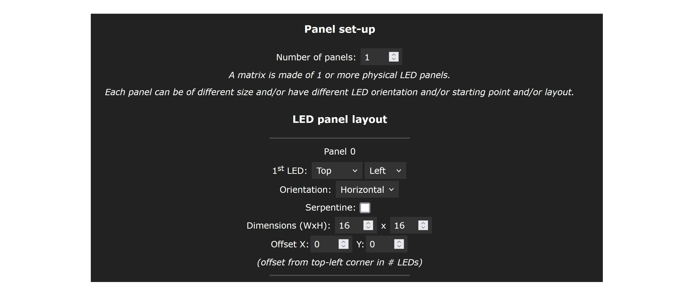

Ja. 2D Support wurde zuerst in Sound Reactive WLED eingeführt du wurde dann in Standard WLED Version 0.14.0 auch implementiert und noch deutlich verbessert. Dieser Stand wird hier beschrieben.
Um 2D LED Matrize einzustellen, geht man zu "Config" -> "2D Configuration". Hier kann man die Anzahl der physikalische Paneele definieren, die in Summe eine Matrize bilden. Im einfachsten Fall besteht die Matrize aus einem Paneel.
Für jedes Paneel stellt man die Eigenschaften ein: Position der ersten LED, Orientierung, Anzahl der LEDs in X und Y Richtung. Man sollte nicht vergessen, unter "Config" -> "LED Preferences" auch die LEDs korrekt einzustellen: die gesamte Anzahl der LEDs, GPIO etc.

Hat man alles korrekt eingestellt, können 2D Effekte sinnvoll verwendet werden. Man kann auch mit Hilfe von WLED auf LED-Matrizen einfache Bilder darstellen (siehe nächste Frage).